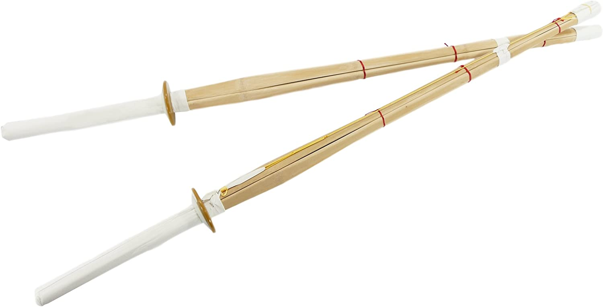
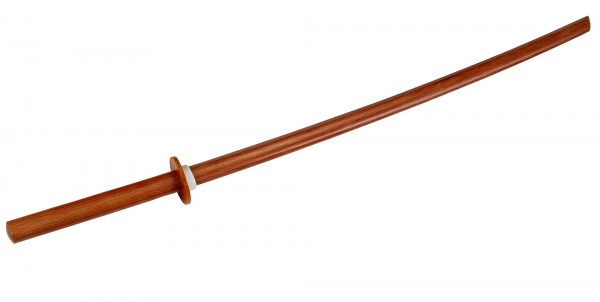
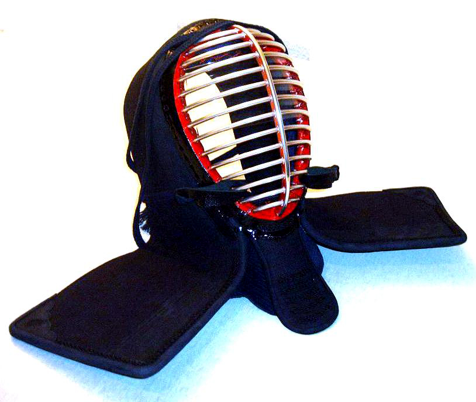
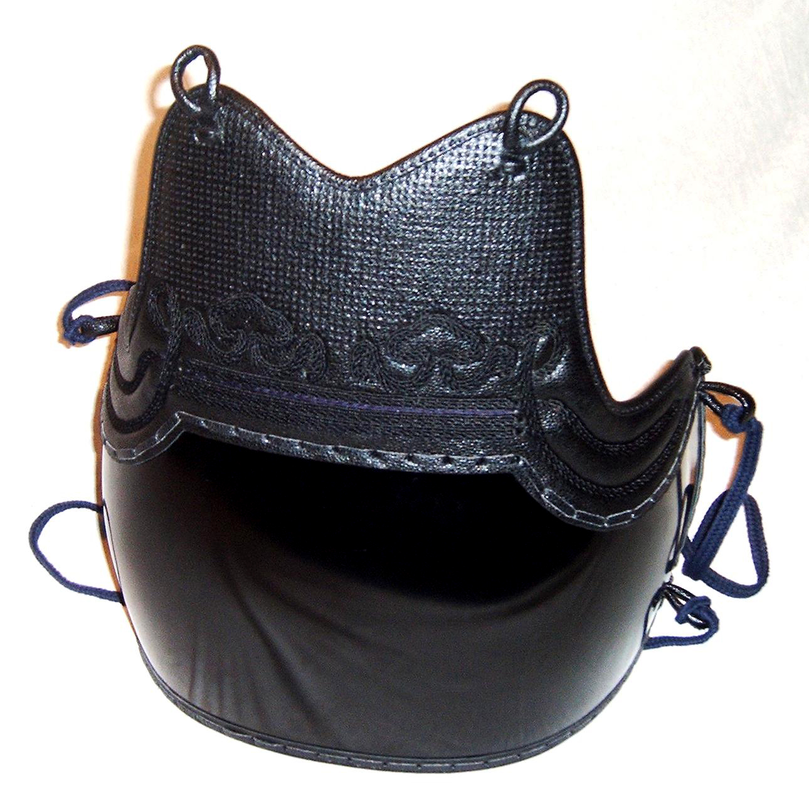
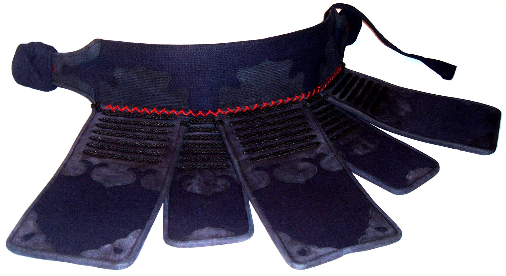
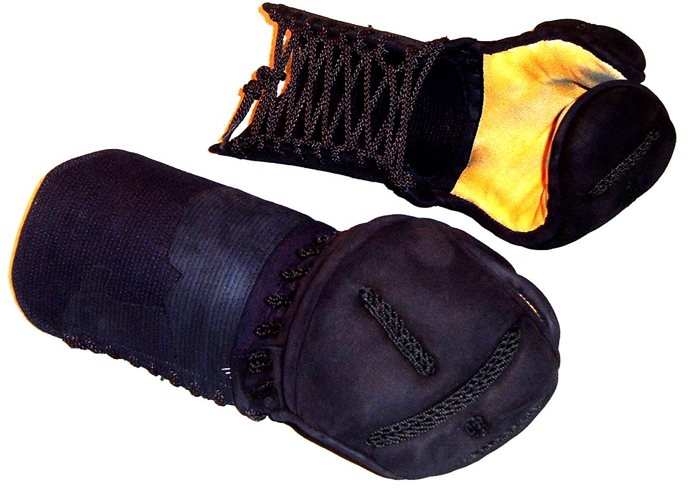

Kengo Gear
Shinai
A shinai (竹刀) is a Japanese sword typically made of bamboo used for practice and competition in kendo. Shinai are also used in other martial arts, but may be styled differently from kendo shinai, and represented with different characters. The light, soft wood used in a shinai distinguishes it from other wooden swords such as a bokken, which is generally made of heavier, sturdier wood.
Bokutō
A bokutō (木刀) is a Japanese wooden sword used for training in kenjutsu. It is usually the size and shape of a katana, but is sometimes shaped like other swords, such as the wakizashi and tantō. Some ornamental bokutō are decorated with mother-of-pearl work and elaborate carvings. Bokutō are traditionally composed of red oak or white oak, although any hardwood can be used. In comparison, practice swords made of flexible, soft wood such as bamboo are referred to as shinai.
Men
The men protects the face, neck, and shoulders. It consists of a facemask with several horizontal metal bars running the entire width of the face, from the chin to the top of the head. To this is attached a long rectangular thick cloth padding that curves over the top of the head and extends to cover the shoulders. A throat protector is attached to the bottom of the facemask. The men is held in place with a pair of woven cords that wrap around the head and are tied at the back. The back of the men is left open for ventilation and the back of the head is unprotected. The target areas of the men are the centre top, and upper left and right sides for cutting strikes and the centre of the throat protector for a thrust.
Dō
The main component of the dō is the gently-curving stomach and chest protector. The modern form has a pronounced bulge to help direct the force of strikes away from the soft areas in the middle of the torso. Lacquered bamboo is traditionally used although lacquered paper 'fibre' (frequently misidentified as fiberglass) or moulded plastic are used for less expensive dō. The dō is supported from the shoulders by two diagonal ties and is restrained at the small of the back with another set of ties. The target areas of the dō are the two lower sides for a slashing cut to the stomach. The top half of the dō is a valid target for a thrust in naginata. In the past, this was also a valid target for a thrust in Kendo.
Tare
The tare is a thick cloth belt that wraps around the waist and ties under the front flap in front of the groin. Sturdy cloth covered flaps hang from the belt to protect the upper legs and groin. The flaps run along half of the belt's length, which should be positioned over the front half of the body. The centre flap is usually covered with a name tag—zekken (ゼッケン) or nafuda (名札)—that identifies the name of the wearer and the dōjō or country they represent. There is no target point on tare, it is for protection against off-target and accidental strikes.
Kote
The kote are mitten-like gloves. They were designed expressly for kendo. While appearing to be cumbersome, enough mobility is allowed to grip the shinai in a comfortable, powerful, and firm way. Kote for naginatajutsu practitioners have a singulated index finger and thumb to better facilitate the rapid shifting of the hands along the length of the naginata's shaft. Naginata kote have a little less padding than those used for kendo. In the past, kote were often made with fully articulated fingers. This is rarely seen today as there can be a safety issue with snagged fingers. A special heavily padded design known as oni-gote (鬼小手) are used by some koryu, most notably Itto-ryu. The target area is the wrist portion of each kote.